Pick 4a or 4b from the videos. Each clip: ankle grab, step-over (the attacker's facing flips once, in a single frame), the man rolls onto his stomach (placeholder roll: a one-frame snap, no roll art), the attacker kneels bending the leg, then sits back and pulls three times with the man's fists alternating lift, strike, rest on the mat; 0.5 s hold. Normal game speed; 0.25× copies of the right-facing 4a case of each pairing (2.8 MB each, over the 1.5 MB commit limit) are local only: regenerate with toehold_t30_video.mjs. Hands ride the clip grip channel. Whole-leg layering, boot-art fit and the roll remain unapproved; there is no playable move yet (T3.2 builds it).
The stills are one-pose clips through the same runtime (tools/debug/toehold_t30_stills.mjs, poses saved in each report.json and replayed with REPLAY=1). Fist contact = the lowest drawn pixel of the hand alone (his forearm/hand pixels within 22 px of the painted palm) against the lowest row of his torso, in px; 0..4 counts as touching. Derek judges every visual.
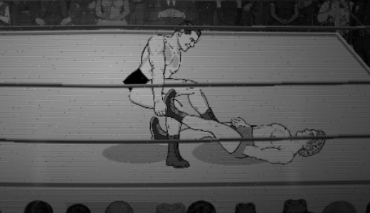 1 ankle grab |
palm to heel 0.8 px, to toe 0 px (bar 6) knee flex: attacker near 1.2 / far 1; man's trapped 0.2 (cap 2.545) near a cap: none (pinned list empty) held foot minus attacker hip y: 26.4 px (0 = hip height, + = below); attacker's body covers 0 of 798 px of the foot mat line (400): attacker knees 52 / 75.7 px above (bar -6..6), ankles 22.3 / 50.4 px above, knee above ankle 29.7 / 25.2, seat 75.2 px above layers: back to front: his free leg, his far arm, torso, head, near arm | Lou far arm, torso, head, far leg, near leg | trapped leg | Lou near arm bent boot: base shin (foot not yet bent) |
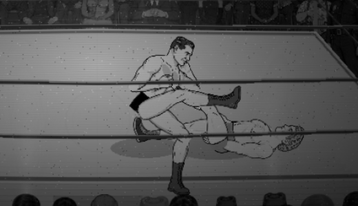 2 mid step-over |
palm to heel 0 px, to toe 0 px (bar 6) knee flex: attacker near 0.5 / far 1; man's trapped 0.5 (cap 2.545) near a cap: none (pinned list empty) held foot minus attacker hip y: -29.9 px (0 = hip height, + = below); attacker's body covers 551 of 801 px of the foot mat line (400): attacker knees 64.5 / 10.8 px above (bar -6..6), ankles 60.2 / -18.5 px above, knee above ankle 4.3 / 29.3, seat 46.7 px above layers: Lou's near leg drawn over the raised shin (his near arm and leg over the trapped leg) bent boot: base shin (foot not yet bent) |
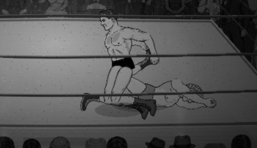 3 kneeling, leg bent |
palm to heel 0 px, to toe 3 px (bar 6); worst over the 2 s fist sell 0 / 3 knee flex: attacker near 1.75 / far 1.58; man's trapped 1.91 (cap 2.545) near a cap: none (pinned list empty) held foot minus attacker hip y: -10.5 px (0 = hip height, + = below); attacker's body covers 37 of 788 px of the foot mat line (400): attacker knees 4.5 / 6.1 px above (bar -6..6), ankles 0.9 / -0.8 px above, knee above ankle 3.6 / 7, seat 59.6 px above fists over a 2 s sell: near 2 strikes, 35 contact frames (longest run 18), highest lift -36 px, deepest 2 px | far 1 strikes, 48 contact frames (longest run 29), highest lift -36 px, deepest 2 px layers: trapped leg behind Lou's near leg and his arms/torso; whole-leg granularity, so shin and boot are behind the thigh too (misses) Receiver: stomach down; hip lift -110, attacker crouch 1, hip spacing 41.5 px. bent boot: George has no ankleTwist: base shin |
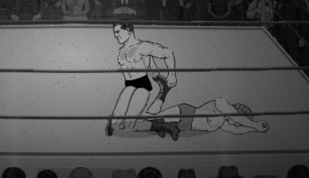 4a sit back on heels |
palm to heel 0 px, to toe 0 px (bar 6); worst over the 2 s fist sell 0 / 0 knee flex: attacker near 1.86 / far 1.95; man's trapped 2.17 (cap 2.545) near a cap: none (pinned list empty) held foot minus attacker hip y: 2.7 px (0 = hip height, + = below); attacker's body covers 0 of 795 px of the foot mat line (400): attacker knees 0 / 3.9 px above (bar -6..6), ankles -0.3 / 3.8 px above, knee above ankle 0.3 / 0.1, seat 53.9 px above fists over a 2 s sell: near 2 strikes, 35 contact frames (longest run 18), highest lift -36 px, deepest 2 px | far 1 strikes, 48 contact frames (longest run 29), highest lift -36 px, deepest 2 px layers: as still 3 Receiver: stomach down; hip lift -110, attacker crouch 1.2, hip spacing 70.6 px. bent boot: George has no ankleTwist: base shin |
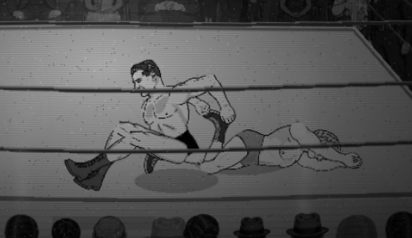 4b sit back on the mat |
palm to heel 0 px, to toe 0 px (bar 6); worst over the 2 s fist sell 0 / 0 knee flex: attacker near 0.89 / far 1.56; man's trapped 2.45 (cap 2.545) near a cap: none (pinned list empty) held foot minus attacker hip y: -23.9 px (0 = hip height, + = below); attacker's body covers 0 of 801 px of the foot mat line (400): attacker knees 24.7 / 35.4 px above (bar -6..6), ankles 6.8 / 7 px above, knee above ankle 17.9 / 28.4, seat 10 px above fists over a 2 s sell: near 2 strikes, 35 contact frames (longest run 18), highest lift -36 px, deepest 2 px | far 1 strikes, 48 contact frames (longest run 29), highest lift -36 px, deepest 2 px layers: as still 3 Receiver: stomach down; hip lift -110, attacker crouch 2.1, hip spacing 78.7 px. bent boot: George has no ankleTwist: base shin |
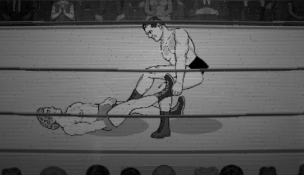 1 ankle grab |
palm to heel 0.8 px, to toe 0 px (bar 6) knee flex: attacker near 1.2 / far 1; man's trapped 0.2 (cap 2.545) near a cap: none (pinned list empty) held foot minus attacker hip y: 26.4 px (0 = hip height, + = below); attacker's body covers 0 of 783 px of the foot mat line (400): attacker knees 52 / 75.7 px above (bar -6..6), ankles 22.3 / 50.4 px above, knee above ankle 29.7 / 25.2, seat 75.2 px above layers: back to front: his free leg, his far arm, torso, head, near arm | Lou far arm, torso, head, far leg, near leg | trapped leg | Lou near arm bent boot: base shin (foot not yet bent) |
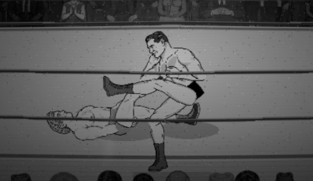 2 mid step-over |
palm to heel 0 px, to toe 0 px (bar 6) knee flex: attacker near 0.5 / far 1; man's trapped 0.5 (cap 2.545) near a cap: none (pinned list empty) held foot minus attacker hip y: -29.9 px (0 = hip height, + = below); attacker's body covers 539 of 789 px of the foot mat line (400): attacker knees 64.5 / 10.8 px above (bar -6..6), ankles 60.2 / -18.5 px above, knee above ankle 4.3 / 29.3, seat 46.7 px above layers: Lou's near leg drawn over the raised shin (his near arm and leg over the trapped leg) bent boot: base shin (foot not yet bent) |
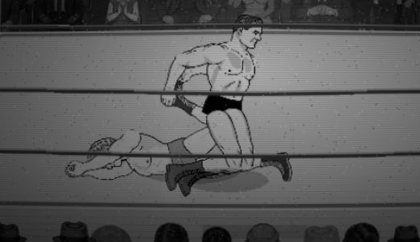 3 kneeling, leg bent |
palm to heel 0 px, to toe 3 px (bar 6); worst over the 2 s fist sell 0 / 3 knee flex: attacker near 1.75 / far 1.58; man's trapped 1.91 (cap 2.545) near a cap: none (pinned list empty) held foot minus attacker hip y: -10.5 px (0 = hip height, + = below); attacker's body covers 45 of 803 px of the foot mat line (400): attacker knees 4.5 / 6.1 px above (bar -6..6), ankles 0.9 / -0.8 px above, knee above ankle 3.6 / 7, seat 59.6 px above fists over a 2 s sell: near 2 strikes, 35 contact frames (longest run 18), highest lift -35 px, deepest 2 px | far 1 strikes, 50 contact frames (longest run 30), highest lift -36 px, deepest 2 px layers: trapped leg behind Lou's near leg and his arms/torso; whole-leg granularity, so shin and boot are behind the thigh too (misses) Receiver: stomach down; hip lift -110, attacker crouch 1, hip spacing 41.5 px. bent boot: George has no ankleTwist: base shin |
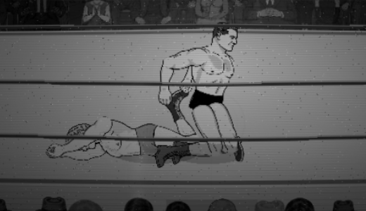 4a sit back on heels |
palm to heel 0 px, to toe 0 px (bar 6); worst over the 2 s fist sell 0 / 0 knee flex: attacker near 1.86 / far 1.95; man's trapped 2.17 (cap 2.545) near a cap: none (pinned list empty) held foot minus attacker hip y: 2.7 px (0 = hip height, + = below); attacker's body covers 0 of 802 px of the foot mat line (400): attacker knees 0 / 3.9 px above (bar -6..6), ankles -0.3 / 3.8 px above, knee above ankle 0.3 / 0.1, seat 53.9 px above fists over a 2 s sell: near 2 strikes, 35 contact frames (longest run 18), highest lift -35 px, deepest 2 px | far 1 strikes, 50 contact frames (longest run 30), highest lift -36 px, deepest 2 px layers: as still 3 Receiver: stomach down; hip lift -110, attacker crouch 1.2, hip spacing 70.6 px. bent boot: George has no ankleTwist: base shin |
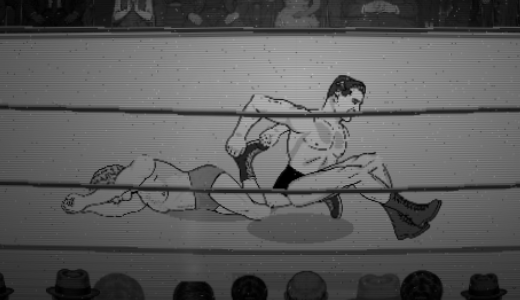 4b sit back on the mat |
palm to heel 0 px, to toe 0 px (bar 6); worst over the 2 s fist sell 0 / 0 knee flex: attacker near 0.89 / far 1.56; man's trapped 2.45 (cap 2.545) near a cap: none (pinned list empty) held foot minus attacker hip y: -23.9 px (0 = hip height, + = below); attacker's body covers 0 of 805 px of the foot mat line (400): attacker knees 24.7 / 35.4 px above (bar -6..6), ankles 6.8 / 7 px above, knee above ankle 17.9 / 28.4, seat 10 px above fists over a 2 s sell: near 2 strikes, 35 contact frames (longest run 18), highest lift -35 px, deepest 2 px | far 1 strikes, 50 contact frames (longest run 30), highest lift -36 px, deepest 2 px layers: as still 3 Receiver: stomach down; hip lift -110, attacker crouch 2.1, hip spacing 78.7 px. bent boot: George has no ankleTwist: base shin |
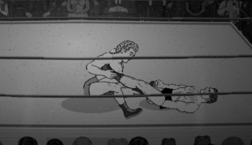 1 ankle grab |
palm to heel 0 px, to toe 0 px (bar 6) knee flex: attacker near 1.2 / far 1; man's trapped 0.2 (cap 2.545) near a cap: none (pinned list empty) held foot minus attacker hip y: -23.5 px (0 = hip height, + = below); attacker's body covers 0 of 866 px of the foot mat line (400): attacker knees 27.8 / 45.5 px above (bar -6..6), ankles -10.2 / 24.9 px above, knee above ankle 38 / 20.5, seat 23.4 px above layers: back to front: his free leg, his far arm, torso, head, near arm | Lou far arm, torso, head, far leg, near leg | trapped leg | Lou near arm bent boot: base shin (foot not yet bent) |
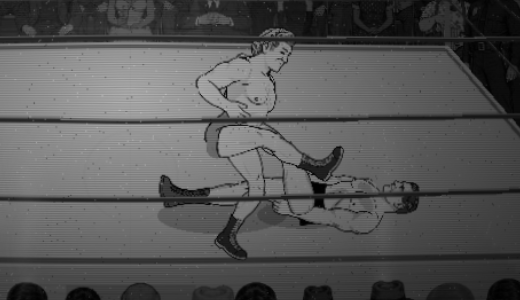 2 mid step-over |
palm to heel 0 px, to toe 0 px (bar 6) knee flex: attacker near 0.5 / far 1; man's trapped 0.5 (cap 2.545) near a cap: none (pinned list empty) held foot minus attacker hip y: -13.7 px (0 = hip height, + = below); attacker's body covers 772 of 866 px of the foot mat line (400): attacker knees 61.2 / 19.9 px above (bar -6..6), ankles 41.2 / -17.1 px above, knee above ankle 20.1 / 37, seat 60.8 px above layers: Lou's near leg drawn over the raised shin (his near arm and leg over the trapped leg) bent boot: base shin (foot not yet bent) |
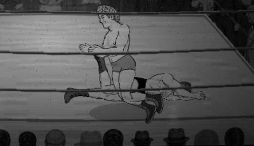 3 kneeling, leg bent |
palm to heel 0 px, to toe 0 px (bar 6); worst over the 2 s fist sell 0 / 0 knee flex: attacker near 1.51 / far 0.88; man's trapped 1.49 (cap 2.545) near a cap: none (pinned list empty) held foot minus attacker hip y: 4.8 px (0 = hip height, + = below); attacker's body covers 0 of 864 px of the foot mat line (400): attacker knees -2.8 / -1.6 px above (bar -6..6), ankles -5.4 / -22.7 px above, knee above ankle 2.6 / 21.1, seat 46.9 px above fists over a 2 s sell: near 2 strikes, 35 contact frames (longest run 18), highest lift -35 px, deepest 2 px | far 1 strikes, 47 contact frames (longest run 29), highest lift -35 px, deepest 2 px layers: trapped leg behind Lou's near leg and his arms/torso; whole-leg granularity, so shin and boot are behind the thigh too (misses) Receiver: stomach down; hip lift -110, attacker crouch 0.5, hip spacing 26.1 px. bent boot: Lou's ankleTwist worn; drawn for a shin hanging straight down, here the shin is folded back (judge the fit) |
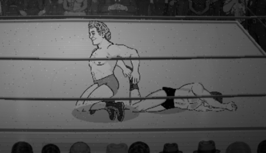 4a sit back on heels |
palm to heel 0 px, to toe 0 px (bar 6); worst over the 2 s fist sell 0 / 0 knee flex: attacker near 2.45 / far 2.45; man's trapped 1.87 (cap 2.545) near a cap: none (pinned list empty) held foot minus attacker hip y: 2.7 px (0 = hip height, + = below); attacker's body covers 0 of 878 px of the foot mat line (400): attacker knees 2.1 / 1.1 px above (bar -6..6), ankles 0.6 / 0.9 px above, knee above ankle 1.4 / 0.2, seat 31.1 px above fists over a 2 s sell: near 2 strikes, 35 contact frames (longest run 18), highest lift -35 px, deepest 2 px | far 1 strikes, 47 contact frames (longest run 29), highest lift -35 px, deepest 2 px layers: as still 3 Receiver: stomach down; hip lift -110, attacker crouch 1.9, hip spacing 108.8 px. bent boot: Lou's ankleTwist worn; drawn for a shin hanging straight down, here the shin is folded back (judge the fit) |
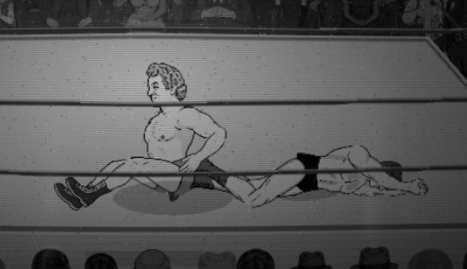 4b sit back on the mat |
palm to heel 0 px, to toe 1.3 px (bar 6); worst over the 2 s fist sell 0 / 1.3 knee flex: attacker near 0.95 / far 0.97; man's trapped 1.21 (cap 2.545) near a cap: none (pinned list empty) held foot minus attacker hip y: 0.4 px (0 = hip height, + = below); attacker's body covers 0 of 870 px of the foot mat line (400): attacker knees 22 / 20.2 px above (bar -6..6), ankles -2.8 / -6.8 px above, knee above ankle 24.8 / 27, seat 6.2 px above fists over a 2 s sell: near 2 strikes, 35 contact frames (longest run 18), highest lift -35 px, deepest 2 px | far 1 strikes, 47 contact frames (longest run 29), highest lift -35 px, deepest 2 px layers: as still 3 Receiver: stomach down; hip lift -110, attacker crouch 1.3, hip spacing 134.3 px. bent boot: Lou's ankleTwist worn; drawn for a shin hanging straight down, here the shin is folded back (judge the fit) |
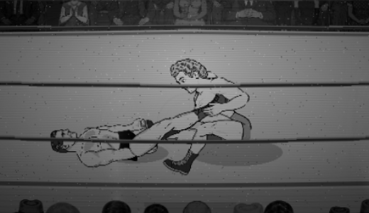 1 ankle grab |
palm to heel 0 px, to toe 0 px (bar 6) knee flex: attacker near 1.2 / far 1; man's trapped 0.2 (cap 2.545) near a cap: none (pinned list empty) held foot minus attacker hip y: -23.5 px (0 = hip height, + = below); attacker's body covers 0 of 866 px of the foot mat line (400): attacker knees 27.8 / 45.5 px above (bar -6..6), ankles -10.2 / 24.9 px above, knee above ankle 38 / 20.5, seat 23.4 px above layers: back to front: his free leg, his far arm, torso, head, near arm | Lou far arm, torso, head, far leg, near leg | trapped leg | Lou near arm bent boot: base shin (foot not yet bent) |
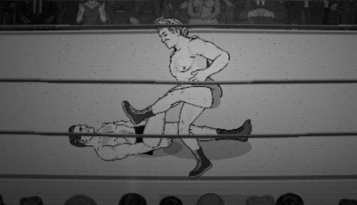 2 mid step-over |
palm to heel 0 px, to toe 0 px (bar 6) knee flex: attacker near 0.5 / far 1; man's trapped 0.5 (cap 2.545) near a cap: none (pinned list empty) held foot minus attacker hip y: -13.7 px (0 = hip height, + = below); attacker's body covers 773 of 867 px of the foot mat line (400): attacker knees 61.2 / 19.9 px above (bar -6..6), ankles 41.2 / -17.1 px above, knee above ankle 20.1 / 37, seat 60.8 px above layers: Lou's near leg drawn over the raised shin (his near arm and leg over the trapped leg) bent boot: base shin (foot not yet bent) |
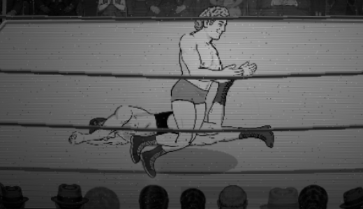 3 kneeling, leg bent |
palm to heel 0 px, to toe 0 px (bar 6); worst over the 2 s fist sell 0 / 0 knee flex: attacker near 1.51 / far 0.88; man's trapped 1.49 (cap 2.545) near a cap: none (pinned list empty) held foot minus attacker hip y: 4.8 px (0 = hip height, + = below); attacker's body covers 0 of 863 px of the foot mat line (400): attacker knees -2.8 / -1.6 px above (bar -6..6), ankles -5.4 / -22.7 px above, knee above ankle 2.6 / 21.1, seat 46.9 px above fists over a 2 s sell: near 2 strikes, 35 contact frames (longest run 18), highest lift -35 px, deepest 2 px | far 1 strikes, 47 contact frames (longest run 29), highest lift -35 px, deepest 2 px layers: trapped leg behind Lou's near leg and his arms/torso; whole-leg granularity, so shin and boot are behind the thigh too (misses) Receiver: stomach down; hip lift -110, attacker crouch 0.5, hip spacing 26.1 px. bent boot: Lou's ankleTwist worn; drawn for a shin hanging straight down, here the shin is folded back (judge the fit) |
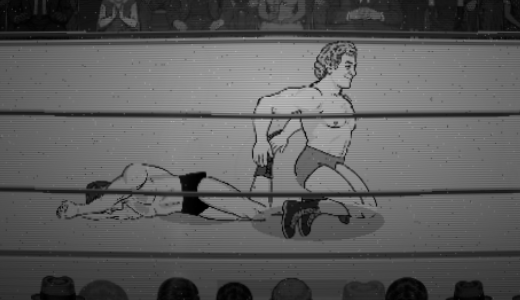 4a sit back on heels |
palm to heel 0 px, to toe 0 px (bar 6); worst over the 2 s fist sell 0 / 0 knee flex: attacker near 2.45 / far 2.45; man's trapped 1.87 (cap 2.545) near a cap: none (pinned list empty) held foot minus attacker hip y: 2.7 px (0 = hip height, + = below); attacker's body covers 0 of 877 px of the foot mat line (400): attacker knees 2.1 / 1.1 px above (bar -6..6), ankles 0.6 / 0.9 px above, knee above ankle 1.4 / 0.2, seat 31.1 px above fists over a 2 s sell: near 2 strikes, 35 contact frames (longest run 18), highest lift -35 px, deepest 2 px | far 1 strikes, 47 contact frames (longest run 29), highest lift -35 px, deepest 2 px layers: as still 3 Receiver: stomach down; hip lift -110, attacker crouch 1.9, hip spacing 108.8 px. bent boot: Lou's ankleTwist worn; drawn for a shin hanging straight down, here the shin is folded back (judge the fit) |
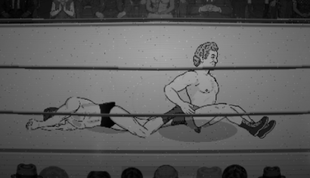 4b sit back on the mat |
palm to heel 0 px, to toe 1.3 px (bar 6); worst over the 2 s fist sell 0 / 1.3 knee flex: attacker near 0.95 / far 0.97; man's trapped 1.21 (cap 2.545) near a cap: none (pinned list empty) held foot minus attacker hip y: 0.4 px (0 = hip height, + = below); attacker's body covers 0 of 869 px of the foot mat line (400): attacker knees 22 / 20.2 px above (bar -6..6), ankles -2.8 / -6.8 px above, knee above ankle 24.8 / 27, seat 6.2 px above fists over a 2 s sell: near 2 strikes, 35 contact frames (longest run 18), highest lift -35 px, deepest 2 px | far 1 strikes, 47 contact frames (longest run 29), highest lift -35 px, deepest 2 px layers: as still 3 Receiver: stomach down; hip lift -110, attacker crouch 1.3, hip spacing 134.3 px. bent boot: Lou's ankleTwist worn; drawn for a shin hanging straight down, here the shin is folded back (judge the fit) |